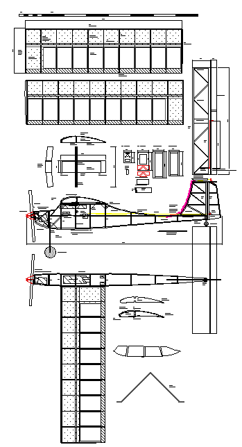
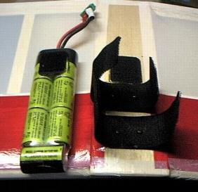
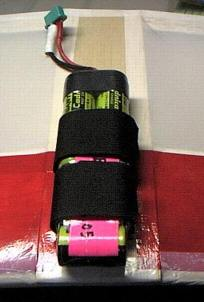

飛行日誌
NORA400 組立の詳細
NORA 400 図面縮小版

図面のDXFファイルはこちら......
- nora400.dxf.zip for Windows（約44K）
各部の組立手順は以下の通り
（画像が無いのでわかりにくいと思います。多謝）
主翼の組立
- リブの形状をプリントアウトし、2mmベニヤに写し取り、リブの型を２枚作る。
- リブをカバーする大きさで長方形に切り出した1.5mmバルサ（20枚＋α）と3mmバルサ４枚（中央部用）、5mmバルサ２枚（翼端部用）をベニヤリブ２枚で挟み、小型クランプで固定する。バルサカンナでおおよその形状に整え、最後は棒ヤスリやサンドペーパーで仕上げる。スパーの通る溝はきちんと寸法通りに加工しておくこと。また、製作中にリブを割ったり、補修で必要になるかも知れないので、バルサリブは５～６枚余分に作っておくと便利。
- サランラップなどを敷いた図面上に、後縁下面材（1.5×20×700mm）と下面プランク材（1.5×80×700mm）をピン・マチ針で固定する。後縁下面材などは、バルサストリッパーを使うと切り出すのがとても楽に出来る。
- 中央部以外のリブの後縁2mmほどだけを低粘度の瞬間接着剤で、後縁下面材に固定する。キャンバーがついているので、後縁下面材の前部は後ほど接着する。リブの前端は、図面通りの位置にマチ針で固定しておく。
- 前縁材（5×10×700mmバルサ）が所定の高さになるようにカイモノをあてがったあとで、リブ前端と前縁材を低粘度瞬間接着剤で接着する。リブが傾かないよう直角を出しつつ接着してゆくこと。接着後、マチ針で固定しておく。
- 上部スパー材（5×5×700mmバルサ）をリブの溝にはめ、低瞬で接着。リブの傾きに注意。
- 後縁上面材をリブに低瞬で接着。後縁上面材と下面材の隙間にも低瞬を流し込み、指で押さえて接着する。
- 上面プランク材（1.5×80×700mm）の前縁を、図面通りの傾きが付くようにサンディングブロックで加工し、前縁材上部へ低瞬で接着。プランク材とリブ上面とをセメダインＣで接着する。中央部のプランク材も同様に瀬接着し、乾くまで、雑誌などを重しに載せ、曲面に馴染ませつつ固定しておく。
- リブキャップ（1.5×6mm）を現場で寸法を合わせつつ切り出してセメダインＣで接着する。
- 接着剤が乾いたら、裏返して平板上にマチ針で固定する。
- 下部スパー材（5×5×700mmバルサ）をリブの溝にはめ、低瞬で接着。
- 桁間補強材（1.5×23×66mm）を上下スパー材の後ろ側に、セメダインＣで接着。中央部の４区間は前側にも接着する。
- 再び主翼を裏返し、上面が上になるようにマチ針で固定する。中央部リブ２枚（3mm厚バルサ）は、上下桁材＋前後2mmずつの幅を確保した位置で分割する。これは主翼連結材（2mmベニヤ）で上下桁材を挟む構造になっているため。ゲージを当て所定の角度に傾けて中央部リブを主翼端部に接着する。
- マチ針を抜いて主翼を手で持ち、後縁下面材とリブを指で押さえつつ、低瞬で接着。
- 翼端の5mm厚リブをセメダインＣで接着し、乾いた後でバルサカンナ、サンディングブロックなどで整形する。
- 反対側の主翼も同様に製作します。
主翼の接合
主翼の接合部は、ムサシノ方式で作ると、下面に△の山が出来てしまう。ここへバッテリーをマジックテープで固定しようと考えたので、なるべくならフラットにしておきたいと思い、胴体幅だけ広くして、フラットな接合部を設けた。と同時に、中央リブどうしの接着＋グラステープ補強という方式をやめ、いわゆるカンザシを入れて補強する方式に変更した。
- 主翼接合部底板（3×54×200mm）を製作用平板の一方の隅にマチ針で固定し、その隣に片方の主翼をきっちり付け、マチ針で固定する。
- 主翼接合部の前縁材（5×10×54mmバルサ）を主翼接合部底板に低瞬で接着。
- 切り出した主翼連結材（2mmベニヤ）で主翼の上下桁材を挟み、桁間下面補強材（3×5×54mmバルサ）の位置を決めて低瞬で接着。
- 30分硬化型エポキシ接着剤を薄く均一につけて、主翼連結材と上下桁材、主翼接合部底板とを接着。大型の事務用クリップか小型クランプで、主翼連結材と上下桁材を挟んでおくこと。上反角は、主翼端のリブの位置で73mm上がる計算になります。充分な時間を取ってエポキシを硬化させること。
- 主翼接合部のリブを、中央部リブと同様に切り出し、セメダインＣで接着する。
- 反対側の主翼も同様に接着する。
- 主翼接合部上面プランク材と後縁材を現場の寸法に合わせて低瞬で接着。
- 接着剤が乾いたら、裏返して片方の主翼のみ（接合部を除く）を平板上に載せマチ針で固定する。左右が接合され、大きな部材になっているので要注意。
- 下面プランク材（1.5×80×700mm）の前縁を、図面通りの傾きが付くようにサンディングブロックで加工し、前縁材下部へ低瞬で接着。プランク材とリブ下面とをセメダインＣで接着する。そして中央部のプランク材とリブキャップ（1.5×6mm）を現場で寸法を合わせつつ切り出してセメダインＣで接着する。乾くまで、雑誌などを重しに載せ、曲面に馴染ませつつ固定しておく。
- 接着剤が乾いた後マチ針を外し、反対側の主翼を固定し、下面のプランク材とリブキャップを上と同様に接着する。
- 主翼接合部下面プランク材をセメダインＣで接着する。
- 前縁材の前側上下をバルサカンナで大まかに削る。曲面の具合は図面を参照のこと。主翼全体にサンドペーパーをかける。
- サンディングを終えたら、フィルムを貼る。主翼接合部の下面は、バッテリー保持用のマジックテープを接着する必要があるので、40mmほどフィルムを貼らずに空けておく。
- マジックテープを凸凹各60mmの長さに切り、噛み合う両面の20mmほどにボンドG17を塗り接着する。その後、接着された20mm幅の部分を主翼接合部下面にボンドG17で接着する。補強として、タッピングビスの小さいものを２本ほど用いて固定する。後ほど重心位置を調整するので、バッテリーの前後方向への固定は、この時点ではまだ行わない。

マジックテープの取り付け状況

バッテリーの装着状況
尾翼の組立
水平・垂直尾翼は、バルサキットを作ったことがある人なら簡単に出来上がると思う。
- 図面にバルサ材を合わせて切り出し、セメダインＣで組み上げる
- 垂直尾翼の生地が出来たなら、プラスティックチューブを前縁に合わせて曲げる。チューブ上端部はエレベーター方向に向けてやや鋭角、かつスムーズに曲げておく。曲げたチューブを瞬間接着剤で前縁に接着する。
- 垂直尾翼、ラダー、水平尾翼・エレベーターにフィルムを貼るが、水平・垂直尾翼の接合部はフィルムを貼らずに残しておく。
- 水平尾翼・エレベーターに0.8mmピアノ線を曲げたトーションバーを差し込む。常にエレベーターがダウン側になるようにピアノ線を差し込むこと。ラダー、エレベーターにホーンを取り付けた後、ムサシノ式の絹糸（アクリルミシン糸）８の字縫いで尾翼に連結する。
- エレベータ前縁中央部には、現物合わせでチューブが通る穴を開けておく。直角を正確に決めながら、水平尾翼に垂直尾翼を載せ、三角補強材で挟み、エポキシ接着剤で接着する。
胴体の組立
胴体は尾翼と同様、4mm角バルサ棒で組み上げる。図面に合わせて部材を切り出し、セメダインＣで接着してゆく。
- 左右の胴体側面を２つ作る。サイドスラストは機首部分の長短で調整するので、右側の部材を2mmだけ短く作っておくこと。また、この時点では、機首部の斜め補強材は入れず、アウトラインを作るだけにしておく。そうしないと、強度が出過ぎて、機首の絞り込み・胴枠の接着が困難になる。
機首下面や主翼後部上面の曲線部は、カーブの内側になる面に、カッターナイフでバルサ棒の1/3ぐらいの深さに5mm間隔で切り込みを入れ、じんわり手で曲げてくせを付けてからマチ針で図面上に固定する。他の部材と接着し、曲線形状が定まったら、切り込みを入れた箇所に低粘度瞬間接着剤を垂らして固めておく。 - 胴枠3と4を、4×7mmバルサで作り、片方の胴体側面に、垂直になるようセメＣで接着。時間をかけてしっかり乾かす。尾部ブロックを胴体側面の最後尾に接着する。
- もう片方の胴体側面を、垂直になるよう気を付けて胴枠にセメＣで接着。しっかり乾燥させる。
- 胴枠3と4、尾部ブロックの中央にマチ針を垂直に立て、３本の針が直線に見通せるよう調整しながら左右の胴体側面の最後尾をクリップで挟む。微調整を行い、中心線が通るように気を付けて、低瞬で接着する。
- 胴枠1と2を2mmベニヤから切り出す。左右の胴体側面を絞り込みながら、まず胴枠2を低瞬で接着する。乾くまで小型クランプか輪ゴムで固定しておく。
- 胴枠1を低瞬で接着する。サイドスラストが付くので、若干右を向いて取り付けることになる。乾くまで小型クランプか輪ゴムで固定しておく。
- 機首部の斜め補強材、メインギヤ取り付け部周辺の補強三角材、左右の胴体側板をつなぐ横材などをセメＣで接着。
- 主翼固定用4mm丸棒が通る穴を補強三角材に開け、丸棒を通しておく。後ろ側の丸棒のみ低瞬で接着、前側は通したままにしておく。これは、墜落時にバッテリーが飛び出して丸棒を破損することがあるので、取り替えが容易にできるようにするため。
- 垂直尾翼が取り付く位置に、1.5mm厚バルサで補強材を張り付ける。バルサの木目が胴体と直角になるように注意。
- 機首近くの適当な位置に、アンプのスイッチを取り付けるためのバルサ材を接着しておく。
- 胴体下面、側面の順でフィルムを貼る。上面は、リンケージ終了後に貼ると作業が楽である。
- 組み上がった垂直尾翼を三角補強材で挟み、胴体中心線に沿い、主翼と直角になるようにエポキシ接着剤で固定する。しっかり乾燥させる。
- ワイヤーベンダーでメインギヤ用の鋼線を曲げ加工し、胴枠2、メインギヤのスペーサー、押さえ板とともにエポキシ接着剤で固定する。尾輪用の鋼線も同様に加工し、尾部ブロックに穴を開けてエポキシ接着剤で固定する。なるべく軽量で径の大きなタイヤを用意し、タイヤストッパーでしっかり固定しておく。
- モーター・ギヤダウンユニット・アンプ・スイッチを組み込み、プロペラとスピンナーを装着する。重心位置は、主翼前縁からおよそ65-68mmほどの位置になるので、この位置で若干機首が重たくなるように、受信機とサーボを仮止めしながら調整する。重心位置調整台があると便利。
- 受信機とサーボの位置が決まれば、取り付け補強材をセメＣで接着し、機材を固定する。充電したバッテリーを装着し、サーボのニュートラルを出してからリンケージを行う。
- 主翼にマジックテープで取り付けたバッテリーを前後に動かして重心位置を調整し、最終的なバッテリー位置を決め、印を付ける。この印の位置で固定されるように、マジックテープの凹凸生地をバッテリーと主翼接合部下面にボンドG17で貼り付ける。
- 主翼をゴムで固定して完成
2003/09/27
Wingtips 目次へ
サイトマップ
ホームへ
お問い合わせ